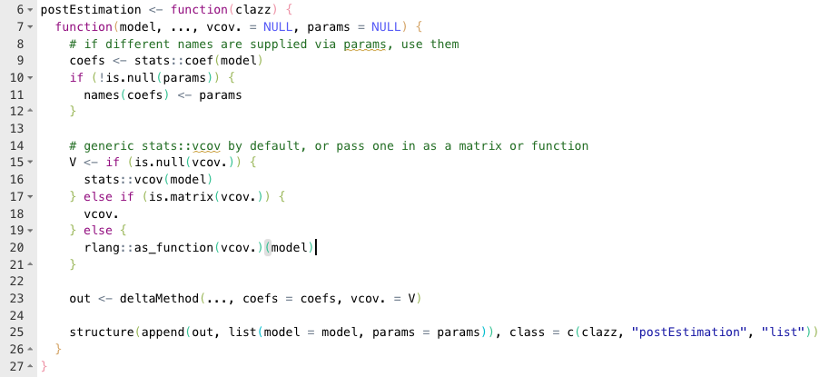
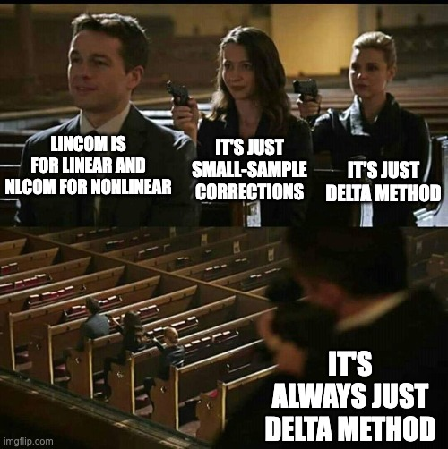
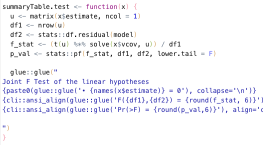

Post-Estimation: It's All Delta Method
Source:vignettes/art/post-estimation.Rmd
post-estimation.RmdThe Pattern
After fitting our linear model, we often want to ask questions about combinations of the \(\beta\)s. Are two of them equal, are these three equal to zero, is \(\tanh \beta_3\) equal to zero? This is broadly known as post-estimation.
I endorse the It’s All Delta Method™ view of post estimation testing. Recall the Delta Method says that if
- \(X\) is a k-dimensional multivariate random normal with mean \(\mu\) and covariance matrix \(\Sigma\)
- \(g:\mathbb{R}^k \rightarrow \mathbb{R}^l\) has a non-zero \(l\times k\) derivative matrix, call it \(\nabla\! g\)
Then we can approximate the distribution of \(g(X)\) as normal with mean \(g(\mu)\) and variance \(\nabla\! g(\mu) \Sigma \nabla\! g(\mu)'\). This is basically a first-order approximation to the distribution using a Taylor series. Like in a Taylor series, if \(g\) is linear (i.e. \(g(x) = Ax\) for some matrix \(A\)), then this is not just an approximation, it is exact.
Second, remember that we can choose to evaluate multiple hypotheses either jointly or independently. If we evaluate them independently, we read the standard errors off the diagonal of the variance matrix and construct a bunch of t- or z-values. If evaluate them jointly in order to test that \(g(\mu)=0\), we construct the chi-square type of statistic by combining all of the hypotheses together into one value. We do that by pre- and post-multiplying the point estimates around the inverse variance matrix, i.e. \[ g(\mu)' (\nabla\! g(\mu) \Sigma \nabla\! g(\mu)') ^ {-1} g(\mu) \sim \mathcal{\chi}^2_l \]
In conclusion, you have two questions: is my function linear, and am I testing jointly or independently? The four possible combinations give you the four Stata commands used in post-estimation: test, testnl, lincom, and nlcom. They all have to perform Delta Method to estimate the distribution of \(g(X)\), but the only difference is what you do with that once you get it:
| Linear | Nonlinear | |
|---|---|---|
| Independent |
lincom Do a t-test |
nlcom Do a z-test |
| Joint |
test Do an F-test |
testnl Do a chi-square test |
Clear as mud? Let’s do an example.
The Implementation
The 0.2.0 release of my code has Stata-esque post-estimation in it. Let’s start by estimating our favorite model, returns to wage based on education and ability score:
library(tidyverse)
library(haven)
library(fixest)
htv <- read_dta(system.file("HTV.DTA", package = "metrics.in.r"))
(model <- feols(lwage ~ educ * abil, data = htv, vcov = "hc1"))## OLS estimation, Dep. Var.: lwage
## Observations: 1,230
## Standard-errors: Heteroskedasticity-robust
## Estimate Std. Error t value Pr(>|t|)
## (Intercept) 1.244587 0.138658 8.97595 < 2.2e-16 ***
## educ 0.084207 0.011709 7.19164 1.1108e-12 ***
## abil 0.114310 0.041425 2.75948 5.8756e-03 **
## educ:abil -0.005061 0.003290 -1.53812 1.2428e-01
## ---
## Signif. codes: 0 '***' 0.001 '**' 0.01 '*' 0.05 '.' 0.1 ' ' 1
## RMSE: 0.53456 Adj. R2: 0.186697Let’s suppose that we are interested in the partial effect of education on wages at different levels of ability. The partial effect is \(\beta_{educ} + abil * \beta_{educ * abil}\). It depends on the ability level. Let’s calulate the 25th, 50th, and 75th percentiles of ability
The first thing we might try is lincom, which will give us a point estimate of each of these partial effects.
library(metrics.in.r)
lincom(model,
educ + abil_25 * `educ:abil`,
educ + abil_50 * `educ:abil`,
educ + abil_75 * `educ:abil`
)## # A tibble: 3 × 7
## Expression Estimate `Std. Error` `t-Value` `Pr(>|t|)` `CI Lower` `CI Upper`
## <chr> <dbl> <dbl> <dbl> <dbl> <dbl> <dbl>
## 1 educ + abil_… 0.0813 0.0106 7.69 3.09e-14 0.102 0.0606
## 2 educ + abil_… 0.0733 0.00887 8.27 3.48e-16 0.0907 0.0559
## 3 educ + abil_… 0.0667 0.00960 6.95 5.98e-12 0.0855 0.0479Some explanation is warranted here. First, educ and
`educ:abil` refer to coefficients in the model. I always
look there first for values, and then your global environment. Second,
the backticks on `educ:abil` are required because it’s a
“weird” R expression and writing backticks tells R to consider that as
one single variable. You would have to do that to test
`(Intercept)` as well.
One improvement (I think) that may make this easier: We can rename our betas. The names of our coefficients are currently
## [1] "(Intercept)" "educ" "abil" "educ:abil"But we can use the glue package to generate simpler
names:
library(glue)
lincom(model,
b2 + abil_25 * b4,
b2 + abil_50 * b4,
b2 + abil_75 * b4,
params = glue("b{1:4}") # equal to c("b1", "b2", "b3", "b4")
)## # A tibble: 3 × 7
## Expression Estimate `Std. Error` `t-Value` `Pr(>|t|)` `CI Lower` `CI Upper`
## <chr> <dbl> <dbl> <dbl> <dbl> <dbl> <dbl>
## 1 b2 + abil_25… 0.0813 0.0106 7.69 3.09e-14 0.102 0.0606
## 2 b2 + abil_50… 0.0733 0.00887 8.27 3.48e-16 0.0907 0.0559
## 3 b2 + abil_75… 0.0667 0.00960 6.95 5.98e-12 0.0855 0.0479## ℹ Where b1=(Intercept), b2=educ, b3=abil, b4=educ:abilNow let’s use the test command. This tests that all of
the expressions you supply are equal to zero. Let’s test if the
coefficients on educ and abil are equal to
each other (i.e. \(\beta_{educ} - \beta_{abil}
= 0\))
test(model, educ - abil)## Joint F Test of the linear hypotheses
## • educ - abil = 0
## F(1,1226) = 0.686609
## Pr(>F) = 0.407481The commands for nonlinear functions work the same, but you can use funky functions:
## # A tibble: 2 × 7
## Expression Estimate `Std. Error` `Z-Value` `Pr(>|z|)` `CI Lower` `CI Upper`
## <chr> <dbl> <dbl> <dbl> <dbl> <dbl> <dbl>
## 1 sin(educ) 0.0841 0.0117 7.21 5.65e-13 0.107 0.0612
## 2 sqrt(abil) 0.338 0.0613 5.52 3.41e- 8 0.458 0.218You can also supply your own vcov for the betas if you
want. This can be a function or a matrix.
## Joint F Test of the linear hypotheses
## • educ - abil = 0
## F(1,1226) = 0.686609
## Pr(>F) = 0.407481Lastly, I should note that the default behavior with robust standard
errors is to use the generic stats::vcov function. That
means that lm() objects are homoskedastic by default, but
feols and lm_robust objects will use the
robust standard errors by default.
The Nitty Gritty: It Really All is Delta Method
If you go into my code and look at the definitions of these functions, it may seem weird:
test <- postEstimation("test")
tesnl <- postEstimation("testnl")
lincom <- postEstimation("lincom")
nlcom <- postEstimation("nlcom")That’s it! Why so simple? What is the postEstimation
function? Here is the code:

First, note that postEstimation is a function that
returns a function, sometimes known as a function
factory. Note that the argument, clazz, is only
used right at the end, on line 25. What is the rest of the function
doing?
Lines 8–21 are just some housekeeping. If you give me the
params argument, change the names of my coefficient vector
to match it. In lines 15–21 I’m just resolving the covariance of the
betas given the different options for supplying it. The real work is
line 23, the deltaMethod.
The deltaMethod function returns the point estimate and
covariance of the post-estimation hypotheses. How is a bit of
digression… I refer the interested reader to the metaprogramming
chapter of Advanced R and to the reference
page on basic symbolic differentiation in R. The point is, it’s all
just Delta Method.

The only difference between all of the post-estimation commands is
the class of the returned object. Then I just write a specialized method
for each one that returns a summary table, for example
test. This is where I calculate the f-statistic, just when
the object is printed out.

I really want to emphasize the point that all of the post-estimation commands RETURN THE EXACT SAME OBJECT. What is printed to the screen differs for each command, but the underlying object is the exact same.
Conclusion
Hopefully this gives you a starting point for doing this in R. Keep
in mind the two distinctions: whether it is linear or nonlinear, and
whether you are jointly or independently testing your hypotheses. This
will lead to pick one among test, testnl,
lincom, or nlcom. It’s all Delta Method, but
the particular test statistic that we choose will be different for each
one.
Why did I write this code myself? Surely there are other ways to do
post-estimation in R. The only problem is that I have not found one that
works as seamlessly as Stata does. The car package has
deltaMethod and linearHypothesis functions,
and the aod package has a wald.test function.
You could definitely stitch them together to get the job done. My issue
is that the difficulty of stitching them together is a friction that
drives people away from R towards Stata. I want to smooth the bumps and
make it easier for people to stop paying through the nose for mediocre
software. So hopefully my code helps you.
Happy Coding!